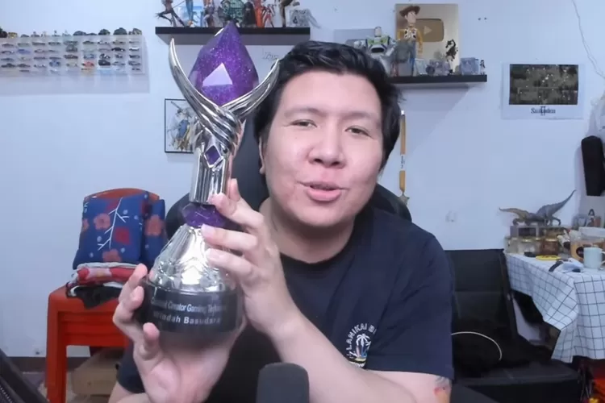
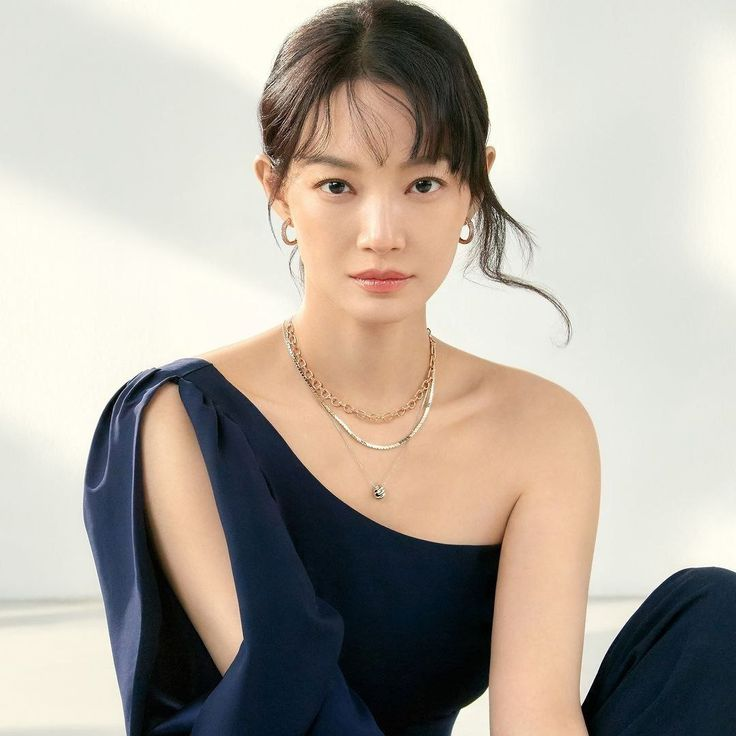
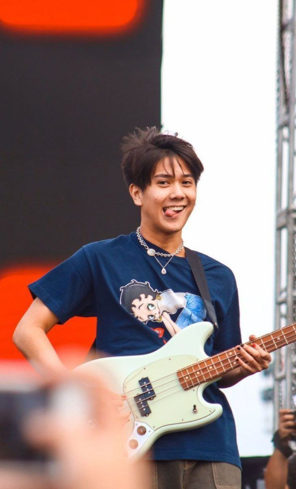

Tabel Idola
| Foto | Nama | Pekerjaan | Penghargaan | Quotes |
|---|---|---|---|---|
|  | Windah Basudara | YouTuber dan Streamer | Most Favorite Gaming Content Creator of 2021 Gaming Content Creator of the Year (2021) Social Media Icon Indonesia Terfavorit (2024) |
"Tidak ada mimpi yang gagal, hanya tertunda" |
| Kim Seon-ho | Actor | Baeksang Arts Award for Most Popular Actor (2021) Grand Bell Award for Best New Actor (2023) Blue Dragon Film Award Popular Star Award-Male (2023) |
"Kebahagiaan bukanlah sesuatu yang dicari, melainkan sesuatu yang harus disadari" | |
 |
Kim Da-mi | Actris | Blue Dragon Film Awards (2018) Buil Film Awards (2018) London Asian Film Festival (2019) Baeksang Arts Awards (2020) Brand Customeer Loyalty Award (2022) |
"konflik pasti akan terjadi jika anda tidak saling memberi ruang" |
|  | Shin Min-a | Actris | SBS Drama Awards (2003) KBS Drama Awards (2015) MBC Drama Awards (2021) APAN Star Awards (2022) Baeksang Arts Awards (2015) |
"Dengan menjadi lebih bebas dengan penampilan saya, saya bisa memancarkan suasana yang lebih santai |
|  | Iqbaal Ramadhan | Actor dan Penyanyi | Dahsyatnya Award untuk OST Film Terdahsyat (2019) Indonesian Movie Actors Award for Favorite Onscreen Couple (2018) Bandung Film Festival for Commendable Film Main Actor (2020) |
"Pentingnya ilmu sebagai investasi terbesar daripada materi, pesan untuk selalu menjelajah, menjadi diri sendiri, menjaga lingkungan pertemanan tetap kecil, dan menjadi cahaya bagi orang lain seperti arti namanya" |